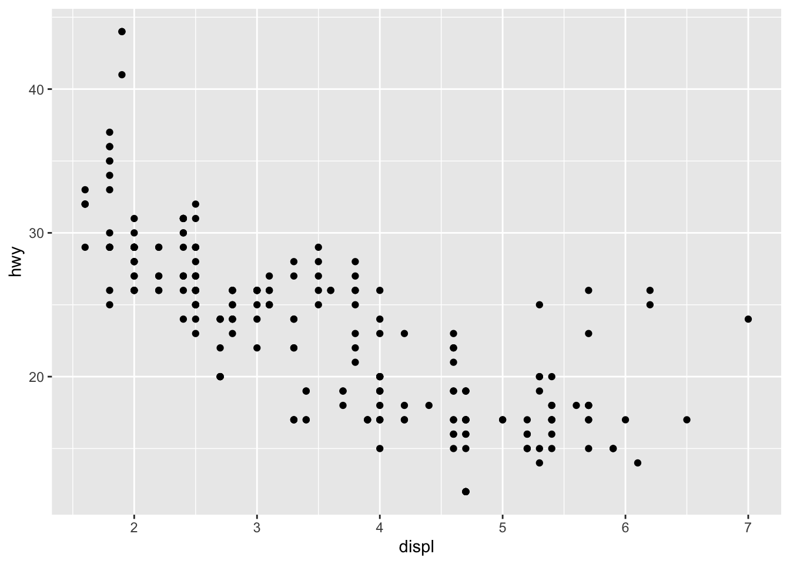
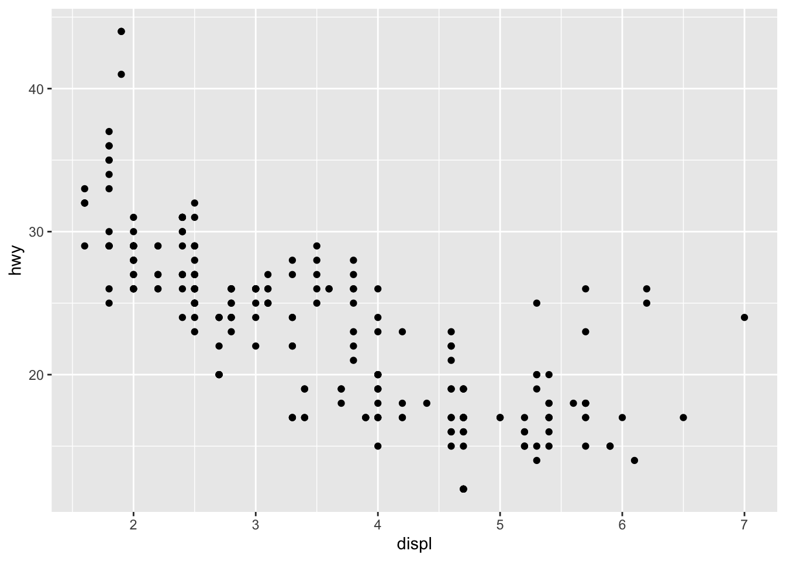
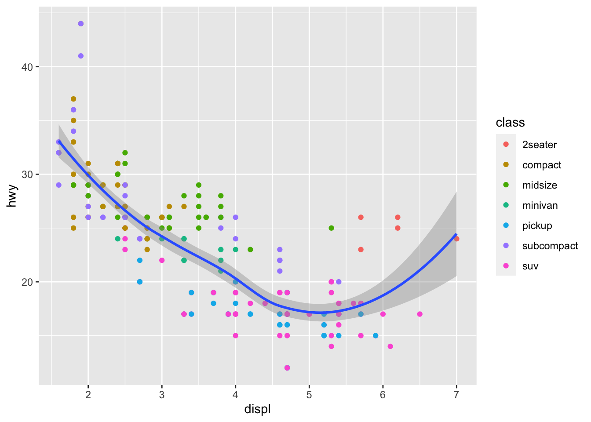

# ex1
library(ggplot2)
ggplot(data = mpg) +
geom_point(mapping = aes(x = displ, y = hwy))
上一節簡介了 R 的基本繪圖後，你應該對於使用 R 繪製圖形具有簡單的認識，這一節將會使用 ggplot2 這個現代的繪圖函式庫來繪製。ggplot2 是 grammar of graphical plot 2 的縮寫，最早由 Wilkison (2005) 所提出的建立的 R 繪圖文法，後來由 Wickham (2009) 所開發出來的套件。ggplot2 簡要來說就是將資料繪製成圖形的過程中，從統計數據產製成幾何元件(geometry objects，例如：散佈圖、折線圖、柱狀圖等)的美學屬性(aesthetic attribute，例如：顏色、形狀、大小等)之映射。以 ggplot2 繪圖文法所繪製的圖由資料、幾何元件、座標系統、主題(theme)等所構成，而相關的繪圖元件，不管是繪圖類型、座標系統都能使用加號(+)串連在一起。ggplot2 包含三個主要繪圖項目，我們以下圖1來示意：
ggplot() 來輸入資料geom )：繪圖的類型，例如柱狀圖(bar plot)、散佈圖(scatter plot)、盒鬚圖(box plot)等。ggplot2 中可以疊加不同的幾何元件圖層coord_cartesian() 圖1、ggplot2 文法示意圖
圖1、ggplot2 文法示意圖
ggplot2 的語法結構如下：

一個以 ggplot2 繪製的圖形，必須要包含 ggplot(data) + geom_function(mapping) 這兩個必要的繪圖元件，即資料與要繪製圖的幾何元件。其餘的座標函式(coordinate functions)、多圖排列組合函式(facet functions)、軸刻度函式(scale functions)與主題函式(theme functions)則不一定要指定。
我們以燃油經濟效率資料集(R 內建的 mpg 資料集)做為範例來解釋。在繪圖前，我們必須先決定要繪製哪種類型的圖、變數多寡(一個、兩個或是三個以上)，至於其餘的繪圖顏色、形狀、座標軸細節等可以繪圖過程中再微調決定。
假設我們繪製的條件如下： 1. 資料集：mtcars 資料集 2. 繪製類型：散佈圖 3. 變數：兩個變數，分別為「發動機的排氣量(displ = engine displacement，單位為公升)」與「高速油耗(hwy = highway mileage，即每加崙可行駛的英哩數)，其中發動機的排氣量為自變數(x)，高速油耗為應變數(y)
以 ggplot2 繪製圖形的 R 程式碼如下：
# ex1
library(ggplot2)
ggplot(data = mpg) +
geom_point(mapping = aes(x = displ, y = hwy))
在上述的 R 語法中，使用了 ggplot() 和 geom_point() 這兩個繪圖元件。其中 ggplot() 是起始繪圖的函式，資料載入 mpg 資料集；而 geom_point() 則是繪製「幾何元件」的點，在 ggplot2 中以 geom 開頭的函式都是繪製幾何元件的功能，例如 geom_smooth()、geom_boxplot() 以及 geom_abline() 等。繪製出來的結果如下圖2。
 圖2、使用 ggplot2 來繪製發動機排氣量和高速油耗之散佈圖
圖2、使用 ggplot2 來繪製發動機排氣量和高速油耗之散佈圖
我們也可以將 aes() 放在 ggplot 中，並存成一個變數 fig2，例如：
``{r} fig2 <- ggplot(data = mpg, aes(x = displ, y = hwy)) + geom_point() fig2
### 1.1 繪製三個以上變數
若要在二維的圖中呈現三個變數，我們可以考慮用顏色來區別。我們設定第三個變數為不同的車輛型式(即 class，為類別資料)，R 程式碼如下：
::: {.cell code-line-number='3'}
```{.r .cell-code}
ggplot(data = mpg) +
geom_point(mapping = aes(x = displ, y = hwy, color = class))
:::

圖3、繪製三個以上的變數範例
在上述圖3的例子中我們在 geom_point() 中使用了 mapping = aes()。 ggplot2 可使用多個圖層疊加起來，你也可以在上面圖3套疊平滑趨勢曲線，例如：
ggplot(data = mpg) +
geom_point(mapping = aes(x = displ, y = hwy, color = class)) +
geom_smooth(mapping = aes(x = displ, y = hwy))`geom_smooth()` using method = 'loess' and formula 'y ~ x'

圖4、套用散佈圖(geom_point)與平滑趨勢曲線(geom_smooth)
我們也能在 ggplot2 中套用不同的統計模式，像是迴歸模型(regression models)。假設我們想求得發動機排氣量和高速油耗之間的關聯性，可以使用簡單線性迴歸，類似在 1.2 節中使用 geom_smooth() 的方式，只需要加上 method = "lm" 即可(lm 代表 linear regression)，繪圖的時候 ggplot2 也會自動預設加上信賴區間，R 程式碼如下：
``{r} ggplot(data = mpg) + geom_point(mapping = aes(x = displ, y = hwy, color = class)) + geom_smooth(mapping = aes(x = displ, y = hwy), method = “lm”)

圖5、散佈圖加上線性模型
``geom_smooth()`` 預設支援常用的迴歸模式，像是簡單線性迴歸(simple linear regression; ``method = "lm"``)、廣義線性模型(Generalised Linear Model; GLM; ``method = "glm"``)、廣義加成模型(Generalised Additive Model; GAM; ``method = "gam"``)。也能夠自行定義模型的參數，例如二項式分布(binomial)、布瓦松分布(Poisson)等，程式碼如下：
``{r}
# 使用 binomial family，連結函數為 logit
geom_smooth(method = "glm", method.args = list(family = "binomial(link = logit)"))如果要自行設定方程式也可以，使用 formula 指定方程式即可，舉例來說，我們設定方程式為
\[ \begin{equation} y = x^2 + exp (x) \end{equation} \]
以上面的方程式來繪圖，ggplot2 語法如下：
``{r} ggplot(data = mpg) + geom_point(mapping = aes(x = displ, y = hwy, color = class)) + geom_smooth(mapping = aes(x = displ, y = hwy), method = ‘lm’, formula = ‘y ~ x^2 + exp(x)’ )

圖6、散佈圖加上 $y = x^2+exp(x)$ 的線性模型適配圖
### 1.4 套用不同的符號
另外在繪製時也能使用不同的圖徵，即在 ``aes()`` 中加入 shape，其數值為某一個類別變數，以 mpg 資料集為例就是 ``class``：
::: {.cell code-line-number='3'}
```{.r .cell-code}
ggplot(data = mpg) +
geom_point(mapping = aes(x = displ, y = hwy, shape = class))Warning: The shape palette can deal with a maximum of 6 discrete values because
more than 6 becomes difficult to discriminate; you have 7. Consider
specifying shapes manually if you must have them.Warning: Removed 62 rows containing missing values (geom_point).
:::
 圖7、套用不同的符號
圖7、套用不同的符號
ggplot2 預設使用的是灰底加上座標格線，若要更換不同的主題，ggplot2 預設提供了黑白配色(theme_bw)、灰階配色(theme_gray)、經典配色(theme_classic)、線條配色(theme_linedraw)、暗色調配色(theme_dark)、亮色調配色(theme_light)等主題。如下圖範例所示：
 圖8、不同的主題配色範例圖
圖8、不同的主題配色範例圖
若要使用主題，只要加上 theme_主題名稱() 即可，以 mpg 資料集為例，其完整語法為：
``{r} ggplot(data = mpg) + geom_point(mapping = aes(x = displ, y = hwy, color = class)) + theme_bw()
### 1.6 美學屬性參數微調
**aes 或 geom_$function 參數：**
* x：設定 x = $變數 。若為單變數，繪製時 x 軸為變數，y 軸則為次數或密度
* y ：設定 y = $變數。若為單變數，繪製時 y 軸為變數，x 軸則為次數或密度
* alpha：透明度，數值為 0–1，從完全透明至完全不透明
* color：前景(線條、框線)顏色，可使用顏色的英文(例：white)，或是16進位碼(例：#ffffff 為白色)
* fill：背景填色
* linetype：線條的類型，可使用 0–6 的代碼，分別代表：0 = 空白(blank), 1 = 實線(solid), 2 = 虛線(dashed), 3 = 點線(dotted)，4 = 點虛線(dotdash), 5 = 長虛線(longdash), 6 = 雙虛線(twodash)
* size：線條粗細
* shape：圖形類別，0–16
* weight：權重
### 1.7 排列位置調整
在圖形的幾何元件(``geom_$function``)可使用 ``position`` 來調整，位置排列的方式有分散排列(dodge)、填滿在某個元件之中(fill)、堆疊(stack)、分散點排列(jitter)、推移(nudge)等。
範例1：使用 mpg 資料集，繪製燃料和不同驅動類型的條狀圖
``{r}
ggplot(data = mpg, mapping = aes(fl, fill = drv)) +
geom_bar()預設會用疊加的方式繪製：

如果加上分散排列，如下面語法：
``{r} ggplot(data = mpg, mapping = aes(fl, fill = drv)) + geom_bar(position = ‘dodge’)
則會呈現下列圖形：

若使用填滿(fill)的方式，就會和堆疊很類似，只不過填滿的每個條狀都會等長，如下列的語法：
``{r}
ggplot(data = mpg, mapping = aes(fl, fill = drv)) +
geom_bar(position = 'fill')
有時候在繪圖的時候，我們會在圖上面加註誤差棒，以了解數據的誤差範圍。若誤差棒的長度愈長，代表其誤差愈大。誤差棒的長度一般是標準差(standard deviation)或標準誤(standard error)。ggplot2 可使用 geom_errorbar(), geom_linerange(), geom_pointrange() 或 geom_crossbar() 等。
下面我們以澎湖南方四島資料集 作為範例來繪製不同土壤性質平均的條型圖加上誤差棒。因為要計算不同土壤性質的平均、標準誤，我們使用 tidyverse 宇宙中的 dplyr 套件之工具來篩選和聚集資料(select, gather, group_by, summarise 等)，計算完每個不同土壤性質的平均和標準誤之後，再使用 ggplot2 來繪圖。詳細繪製的語法如下：
``{r} library(tidyverse) library(ggplot2)
sisland.env_summary <- sisland.env %>% # 選擇目標欄位：島嶼(island)、土壤有機質(SOM)、pH、鎂離子(Mg)、 # 鈉離子(Na), 岩石地比例(rock_ratio) select(island, SOM, pH, Mg, Na, rock_ratio) %>% # 將寬表轉成長表，但排除島嶼。聚集後的索引(key，也就是土壤性質， # 像是SOM, pH 等)重新命名為 soil_properties # 數值(value)重新命名為 measurements gather(key = ‘soil_properties’, value = ‘measurements’, -island) %>% # 以島嶼和土壤性質作為群組 group_by(island, soil_properties) %>% # 使用 summarise 來計算平均和標準誤 summarise(mean = mean(measurements), se = sd(measurements) / length(measurements)) # 使用 ggplot2 繪圖 ggplot(data = sisland.env_summary, mapping = aes(x= soil_properties, y = mean, fill = island)) + # 手動填色 scale_fill_brewer(palette = ‘Pastel1’) + # 使用 geom_bar() 繪製條型圖 geom_bar(stat = ‘identity’, position = ‘dodge’) + # 加上誤差棒 geom_errorbar，使用平均數加減一個標準誤 geom_errorbar(aes(ymin = mean - se, ymax = mean + se), width = 0.3, position = position_dodge(0.9))
繪製出圖結果如下：

### 1.9 多圖排列(facet)
這裡的多圖排列(facet)指的是把一張圖依照不同的離散變數來切分成數個子圖。另外一個把多個不同小圖組成一個完整大圖，請參見 1.7 節小圖。以 mpg 資料集來說，若我們要依照不同的汽缸數(cyl 欄位)來分別看發動機排氣量(displ)和市區油耗(cty)，我們可以使用 ``facet_grid()`` 來依據汽缸數來切成小圖：

圖9、不同汽缸車輛的發動機排氣量和高速油耗比較圖
ggplot2 語法為：
``{r}
ggplot(data = mpg, mapping = aes(x = displ, y = hwy, color = class)) +
geom_point() +
facet_grid(cols = vars(cyl))其中 facet_grid() 裡頭可以依照 cols (欄)或 rows (列) 來排列。不管是欄或列都要放 vars(離散的變數)。也可以同時加入兩種不同的離散變數來排列，例如不同汽缸數(以欄來排列)和不同燃料(以列來排列)來做比較： ``{r} ggplot(data = mpg, mapping = aes(x = displ, y = hwy, color = class)) + geom_point() + facet_grid(rows = vars(fl), cols = vars(cyl))
產製出來的圖如下圖：

圖10、facet_grid 範例，以燃料(fl)和汽缸數(cyl)類型來做為小圖單元顯示發動機排氣量和高速油耗的比較組圖
註：4,5,6,8 代表汽缸數，c, d, e, p, r 分別代表是燃料或動力類型，c = CNS (compressed natural gas 壓縮天然氣), d = diesel (柴油), e = electricity (電力), p = premium (高級汽油，類似我們的 92 無鉛汽油，辛烷值約在91以上)，r = regular (一般汽油，辛烷值通常約 87)
### 1.10 小圖組成大圖
若要把許多張不同的小圖組合成一張大圖，可以透過 [ggpubr](https://cran.r-project.org/package=ggpubr) 和 [gridExtra](https://cran.r-project.org/package=gridExtra) 等套件來實作。本節將使用 ggpubr 的 ``ggarrange()`` 來組合小圖。組合的步驟分為兩部分，第一個是使用 ``ggplot2`` 來產生圖，接下來再使用 ``ggarrange()`` 來組合。
若我們有四張圖要組合起來，我們可以使用下列的語法：
``{r}
# 1. 先建立個別四張圖
g1 <- ggplot(data = mpg) +
geom_point(mapping = aes(x = displ, y = hwy, color = class)) +
labs(title = 'theme_bw') +
theme_bw()
g2 <- ggplot(data = mpg) +
geom_point(mapping = aes(x = displ, y = cty, color = class)) +
labs(title = 'theme_gray') +
theme_gray()
g3 <- ggplot(data = mpg) +
geom_point(mapping = aes(x = displ, y = hwy, color = class)) +
labs(title = 'theme_classic') +
theme_classic()
g4 <- ggplot(data = mpg) +
geom_point(mapping = aes(x = displ, y = cty, color = class)) +
labs(title = 'theme_linedraw') +
theme_linedraw()
# 2. 使用 ggpubr 的 ggarrange() 來組合
library(ggpubr)
g_all <- ggarrange(g1, g2, g3, g4)
g_all
但上面的圖如果要放在報告中，會出現以下的問題 1. 重複顯示圖例 2. 沒有小圖的編號，若文章內容要引用就不知道指的是哪張小圖
所以我們可以加上 common.legend = TRUE 和 labels = c('(a)', '(b)', '(c)', '(d)') 來修正：
``{r} g_all <- ggarrange(g1, g2, g3, g4, labels = c(‘(a)’, ‘(b)’, ‘(c)’, ‘(d)’), font.label = list(size = 10), common.legend = TRUE, legend=“bottom”) g_all
修正後的圖如下：

### 1.11 儲存與輸出
輸出圖片除了使用 RStudio 本身的介面來儲存外，可以直接使用``ggsave()``來儲存圖片為不同的格式和大小，``ggsave()``支援輸出 png, pdf, jpg 等不同格式，也能夠設定 dpi 和圖片長寬等資訊。一般的輸出語法為：
``{r}
# 將 1.7 節的 g_all 儲存成 g_all.png，並設定 dpi 為 300
ggsave(g_all, filename = 'g_all.png', dpi = 300)但若圖片中有多位元的文字，在部分作業系統可能會無法顯示，這時候可以使用 Cairo 套件，輸出的時候繪圖裝置要選擇 cairo_pdf() 或是其他 Cairo 支援的裝置。或是使用 showtext 套件，使用的語法如下：
``{r} library(showtext) showtext_auto() # Not RUN g1 <- ggplot(…) ggsave(g1, filename = ‘g1.png’) ```
Wickham, H. (2009) ggplot2: Elegant Graphics for Data Analysis. 2nd Edition, Springer, New York. https://doi.org/10.1007/978-0-387-98141-3`